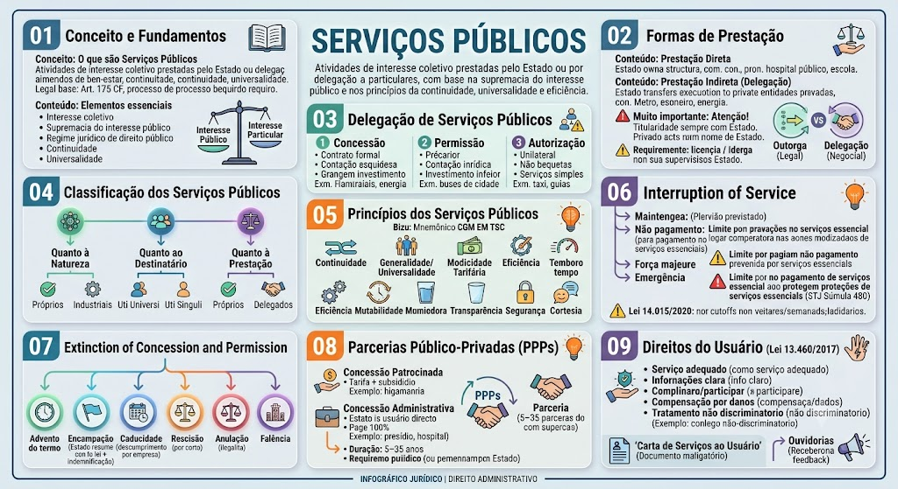

O que são Serviços Públicos
O que são Serviços Públicos
São atividades de interesse coletivo ou de interesse geral da população, prestadas diretamente pelo Estado ou por delegação a particulares, fundamentadas no princípio da supremacia do interesse público e visando assegurar bem-estar social, continuidade e universalidade.
Base legal: Art. 175 da Constituição Federal, que atribui ao Poder Público o dever de prestá-los, diretamente ou sob regime de concessão ou permissão, sempre mediante licitação.
Elementos essenciais
Prestação Direta
Prestação Direta
Executada pelos próprios órgãos e entidades da Administração Pública (centralizada ou descentralizada). O Estado assume integralmente a execução do serviço, utilizando sua própria estrutura administrativa.
Exemplo: Serviço de saúde prestado por hospitais públicos, escolas da rede municipal, fornecimento de água por autarquia municipal.
Prestação Indireta (Delegação)
Prestação Indireta (Delegação)
O Estado transfere a execução do serviço a particulares, mediante concessão, permissão ou autorização. O Estado mantém a titularidade do serviço e o poder de regulamentar e fiscalizar.
Exemplo: Empresa privada que opera o metrô ou a distribuição de energia elétrica mediante concessão.
Atenção!
Atenção!
A titularidade do serviço público é sempre do Estado, mesmo quando a execução é delegada a particulares. O particular presta o serviço em nome próprio, mas sob fiscalização e regulação estatal.
Outorga vs. Delegação (Descentralização)
Outorga vs. Delegação (Descentralização)
Descentralização por Outorga (Legal): O Estado transfere a titularidade e a execução do serviço para outra pessoa jurídica (ex: Autarquias ou Fundações Públicas). É feita por lei.
Descentralização por Delegação (Negocial): O Estado transfere apenas a execução do serviço (ex: Concessionárias e Permissionárias). É feita por contrato ou ato administrativo.
Concessão de Serviço Público
Concessão de Serviço Público
Forma mais completa e estável de delegação. Realizada por meio de contrato administrativo, precedido de licitação na modalidade concorrência (ou diálogo competitivo, conforme Lei 14.133/2021). O concessionário presta o serviço em regime de empresa, com prazo determinado, utilizando meios próprios e remunerando-se por tarifas ou contraprestação pecuniária.
Características: maior investimento, garantias jurídicas robustas, necessidade de licitação em concorrência, prazo determinado (geralmente longo), e possibilidade de prorrogação.
Exemplo: Concessão de rodovias federais (pedágio), distribuição de energia elétrica, serviços de saneamento básico, transporte ferroviário de cargas.
Permissão de Serviço Público
Permissão de Serviço Público
Delegação a título precário, formalizada por contrato de adesão, sempre precedida de licitação (Art. 175 da CF e Art. 2º, IV da Lei 8.987/95). As modalidades de licitação são as previstas na Lei 14.133/2021 (concorrência ou diálogo competitivo). Caracteriza-se por menor formalidade e maior precariedade, podendo ser revogada a qualquer momento por interesse público.
Características: precariedade, prazo indeterminado (ou curto), menor investimento, serviços de menor impacto social.
Exemplo: Serviços de transporte público urbano por ônibus em algumas cidades, serviços de táxi, serviços de radiodifusão (em alguns casos).
⚠️ Atenção! A permissão SEMPRE exige licitação, conforme Art. 175 da CF e Art. 2º, IV da Lei 8.987/95. As antigas modalidades 'convite' e 'tomada de preços' foram extintas pela Lei 14.133/2021.
Autorização de Serviço Público
Autorização de Serviço Público
Ato administrativo unilateral, discricionário e precário, pelo qual o Estado faculta ao particular a prestação de serviços de interesse público, sem necessidade de licitação. É revogável a qualquer momento, sem direito a indenização.
Características: ausência de licitação, ato unilateral, precariedade máxima, serviços de caráter simples e eventual.
Exemplo: Transporte alternativo de passageiros (vans escolares, transporte complementar), serviço de táxi em algumas localidades, permissionários de feiras livres, serviços de guias turísticos.
Atualização – Lei 14.133/2021 (Nova Lei de Licitações)
Atualização – Lei 14.133/2021 (Nova Lei de Licitações)
A Lei 14.133/2021 revogou a Lei 8.666/93 e a Lei 10.520/02 (pregão) e unificou as regras de licitações e contratos administrativos. Para concessões e permissões, as modalidades admitidas são concorrência e diálogo competitivo. O pregão, por exemplo, não é mais utilizado para esses fins.
Impacto: A exigência de licitação para concessão e permissão permanece, mas os procedimentos são mais modernos, com ênfase em planejamento, transparência e combate à corrupção. A Lei 8.987/95 (Lei de Concessões) continua em vigor, sendo aplicada em conjunto com a Lei 14.133/2021.
Quanto à Natureza
Quanto à Natureza
Próprios do Estado (ou essenciais): envolvem o exercício do poder de soberania – segurança pública, justiça, diplomacia, defesa nacional. Não são delegáveis.
Industriais ou Econômicos: podem ser prestados por particulares, mediante delegação – energia, telecomunicações, transporte.
Quanto ao Destinatário
Quanto ao Destinatário
Uti Universi: voltados à coletividade de forma indivisível, sem possibilidade de identificar usuários específicos. São custeados por impostos (taxas ou tarifas simbólicas). Exemplo: iluminação pública, conservação de vias públicas.
Uti Singuli: individualizáveis e mensuráveis, cada usuário pode ser identificado e paga tarifa diretamente pelo serviço. Exemplo: água, energia elétrica, telefonia, transporte coletivo.
Quanto à Prestação
Quanto à Prestação
Próprios: prestados diretamente pelo Estado (centralizada ou descentralizada) – ex: serviços de saúde em hospitais públicos.
Delegados: prestados por concessionários, permissionários ou autorizatários – ex: distribuição de energia.
Princípios fundamentais
🧠 Mnemônico: CGM EM TSC
🧠 Mnemônico: CGM EM TSC
Continuidade · Generalidade · Modicidade · Eficiência · Mutabilidade · Transparência · Segurança · Cortesia → CGM EM TSC
Ou, para facilitar: \"Cada Grande Macaco Engole Muitas Tâmaras, Só Comendo\" – (C)ontinuidade, (G)eneralidade, (M)odicidade, (E)ficiência, (M)utabilidade, (T)ransparência, (S)egurança, (C)ortesia.
Quando pode ocorrer
Quando pode ocorrer
A interrupção do serviço público só é admitida em situações excepcionais, sob pena de violação do princípio da continuidade:
🚨 Cuidado!
🚨 Cuidado!
A interrupção por inadimplência não pode atingir serviços essenciais que afetem a vida, a saúde ou a segurança do usuário. Ex: hospitais, bombeiros, fornecimento de água para hidratação básica. A Súmula 480 do STJ já decidiu que o corte de energia elétrica é legítimo, desde que o consumidor seja previamente notificado.
📌 Nova Pegadinha (Lei nº 14.015/2020)
📌 Nova Pegadinha (Lei nº 14.015/2020)
A interrupção do serviço por falta de pagamento não pode ser iniciada na sexta-feira, no sábado, no domingo, em feriado ou na véspera de feriado (Art. 6º, § 4º da Lei 8.987/95).
Formas de Extinção
O que são PPPs
O que são PPPs
Modalidades especiais de concessão, voltadas para projetos de grande vulto e com prazo mínimo de 5 anos (e máximo de 35 anos). Exigem licitação na modalidade concorrência.
Requisitos: valor mínimo de R$ 20 milhões (para a União) ou conforme lei estadual/municipal; contrato com prazo entre 5 e 35 anos; obrigatoriedade de constituição de Sociedade de Propósito Específico (SPE) para execução do projeto.
Concessão Patrocinada
Concessão Patrocinada
Envolve tarifa paga pelo usuário + contraprestação pecuniária do parceiro público (subsídio). O Estado complementa o valor para viabilizar o projeto.
Exemplo: Rodovias com pedágio onde o valor da tarifa não cobre todos os custos, e o Estado paga uma parte.
Concessão Administrativa
Concessão Administrativa
O próprio Estado é o usuário direto ou indireto do serviço, e o Estado paga 100% da contraprestação. Não envolve tarifa paga pelo usuário final.
Exemplo: Construção e gestão de presídios, hospitais públicos, ou escolas, onde o governo paga pela operação.
O que são e suas funções
O que são e suas funções
As agências reguladoras são autarquias especiais, vinculadas à Administração Pública indireta, com a função de regular, controlar e fiscalizar os serviços públicos delegados, garantindo o cumprimento dos contratos e a qualidade do serviço.
Exemplos: ANATEL (telecomunicações), ANEEL (energia), ANP (petróleo), ANVISA (vigilância sanitária), ANS (saúde suplementar).
Principais atribuições:
- Editar normas e padrões de qualidade.
- Fiscalizar concessionárias e permissionárias.
- Aplicar sanções administrativas.
- Resolver conflitos entre usuários e prestadores (mediação e arbitragem).
- Promover audiências públicas para participação social.
Quais são os direitos
Quais são os direitos
O usuário de serviço público tem direito a:
Exemplo prático
Exemplo prático
Se uma concessionária de energia corta o fornecimento sem aviso prévio e sem justa causa, causando prejuízo a um comércio, o usuário pode reclamar na agência reguladora e, se comprovado o dano, buscar indenização judicial.
Carta de Serviços ao Usuário
Carta de Serviços ao Usuário
Documento obrigatório (Art. 7º da Lei 13.460/2017) onde o órgão/entidade informa detalhadamente os serviços prestados, prazos, tempos de espera e padrões de atendimento.
Ouvidorias
Ouvidorias
Órgão responsável por receber sugestões, elogios, reclamações e denúncias dos usuários, garantindo a participação social e o controle da qualidade dos serviços.
Responsabilidade objetiva (Art. 37, §6º CF)
Responsabilidade objetiva (Art. 37, §6º CF)
As pessoas jurídicas de direito público e as de direito privado prestadoras de serviços públicos respondem pelos danos que seus agentes causarem a terceiros, assegurado o direito de regresso contra o responsável nos casos de dolo ou culpa.
Teoria do risco administrativo: O Estado (ou o concessionário) responde independentemente de culpa, bastando a comprovação do nexo causal entre o serviço e o dano.
Súmula 591 do STF: 'A responsabilidade civil das empresas prestadoras de serviço público é objetiva, em relação aos danos causados a terceiros, decorrentes de sua atividade, podendo ser afastada por caso fortuito ou força maior.'
Exceção: Nos casos de danos causados por atos de terceiros (ex: vandalismo) ou por culpa exclusiva da vítima, a responsabilidade é excluída.
Mapa-mental
Material de estudo: Serviços Públicos
Material complementar · Ver fonte no GitHub
Conceito e Fundamentos
Elementos essenciais
- Interesse coletivo – atende à coletividade, não a interesses particulares.
- Supremacia do interesse público – justifica as prerrogativas estatais.
- Regime jurídico de direito público – sujeito a princípios e normas especiais.
- Continuidade – não pode ser interrompido sem justa causa.
- Universalidade – deve ser acessível a todos, sem discriminação.
Princípios dos Serviços Públicos
Princípios fundamentais
- Continuidade – o serviço não pode ser interrompido sem justa causa (garantia da prestação ininterrupta).
- Generalidade / Universalidade – acesso a todos, sem discriminação, em igualdade de condições.
- Modicidade Tarifária – preços razoáveis e compatíveis com o poder aquisitivo da população.
- Eficiência – otimização de recursos, qualidade, tempestividade e produtividade.
- Mutabilidade – o Estado pode alterar unilateralmente as condições do serviço, respeitados os direitos adquiridos e o equilíbrio econômico-financeiro.
- Transparência – informações claras e adequadas ao cidadão sobre tarifas, condições, prazos.
- Segurança e Regularidade – o serviço deve ser confiável, com padrões mínimos de qualidade.
- Cortesia ao Usuário – atendimento educado e respeitoso.
Interrupção do Serviço Público
Quando pode ocorrer
A interrupção do serviço público só é admitida em situações excepcionais, sob pena de violação do princípio da continuidade:
- Manutenção programada – com aviso prévio ao usuário.
- Inadimplência do usuário – desde que o serviço seja essencial e a interrupção não afete a vida ou a saúde (ex: água pode ser cortada, energia também, mas há limites).
- Caso fortuito ou força maior – eventos imprevisíveis e inevitáveis.
- Situações de emergência – risco à segurança ou à saúde pública.
Extinção da Concessão e Permissão
Formas de Extinção
- Advento do termo contratual: Término normal do prazo do contrato.
- Encampação: Retomada do serviço pelo Estado durante o contrato por motivo de interesse público (exige lei autorizativa específica + indenização prévia).
- Caducidade: Rescisão decretada pelo Estado por descumprimento contratual/falta grave da concessionária (inexecução total ou parcial).
- Rescisão: Pedida pela concessionária na Justiça quando o Estado descumpre o contrato (o particular não pode simplesmente 'parar de prestar o serviço' por conta da continuidade).
- Anulação: Extinção por motivo de ilegalidade no contrato ou na licitação.
- Falência ou Extinção da empresa: Morte da pessoa jurídica concessionária.
Direitos do Usuário (Lei nº 13.460/2017)
Quais são os direitos
O usuário de serviço público tem direito a:
- Serviço adequado, eficiente e seguro – conforme padrões de qualidade definidos pela lei e pelo contrato.
- Informação clara e acessível – sobre tarifas, prazos, condições de contrato e procedimentos.
- Reclamação e participação – direito de reclamar, sugerir e participar de audiências públicas.
- Indenização por danos – em caso de prestação inadequada que cause danos materiais ou morais.
- Tratamento não discriminatório – vedação a qualquer tipo de preconceito.
Mapa-mental
Mapa-mental
